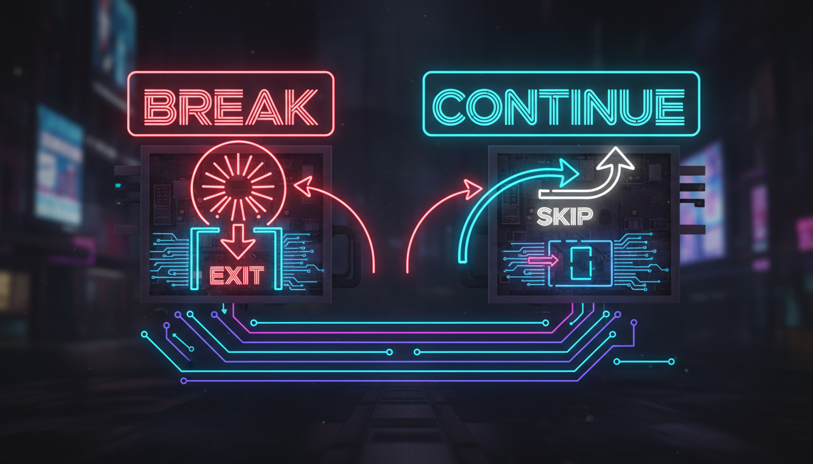

Керування циклами, мітки, практичні приклади

Оператор break негайно перериває виконання циклу або switch і передає керування на наступний оператор після циклу.
// Знаходження першого дільника
#include <iostream>
int main() {
int n = 91;
for (int i = 2; i <= n / 2; i++) {
if (n % i == 0) {
std::cout << "Перший дільник: " << i << std::endl;
break; // Виходимо з циклу
}
}
return 0;
}
// Вихід з меню
#include <iostream>
int main() {
while (true) {
std::cout << "1. Грати" << std::endl;
std::cout << "2. Налаштування" << std::endl;
std::cout << "0. Вихід" << std::endl;
int choice;
std::cin >> choice;
if (choice == 0) {
std::cout << "До побачення!" << std::endl;
break; // Вихід з безкінечного циклу
}
std::cout << "Ви обрали: " << choice << std::endl;
}
return 0;
}Оператор continue пропускає поточну ітерацію циклу і переходить до наступної.
// Виведення лише парних чисел
#include <iostream>
int main() {
for (int i = 1; i <= 20; i++) {
if (i % 2 != 0) {
continue; // Пропускаємо непарні числа
}
std::cout << i << " ";
}
// Виведе: 2 4 6 8 10 12 14 16 18 20
return 0;
}
// Сума позитивних чисел (ігноруємо негативні)
#include <iostream>
int main() {
int numbers[] = {5, -3, 8, -1, 10, -7, 15};
int sum = 0;
for (int n : numbers) {
if (n < 0) {
continue; // Ігноруємо негативні числа
}
sum += n;
}
std::cout << "Сума позитивних: " << sum << std::endl; // 38
return 0;
}break перериває тільки НАЙБЛИЖЧИЙ цикл. Для виходу з вкладених циклів використовують прапорець або goto.
// Використання прапорця
#include <iostream>
int main() {
bool found = false;
for (int i = 0; i < 10 && !found; i++) {
for (int j = 0; j < 10; j++) {
if (i * j == 42) {
std::cout << "Знайдено: " << i << " * " << j << " = 42" << std::endl;
found = true;
break; // Вихід з внутрішнього циклу
}
}
}
return 0;
}| Оператор | Дія | Застосування |
|---|---|---|
| break | Повний вихід з циклу | Знайшли потрібне, помилка |
| continue | Пропуск поточної ітерації | Фільтрація, пропуск умов |